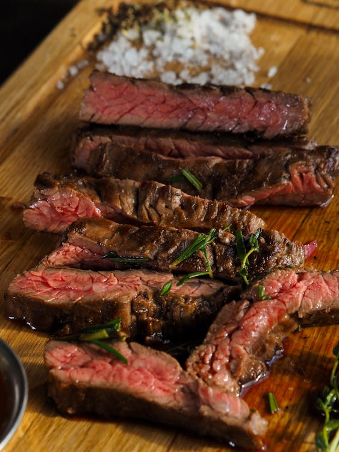

Rump Steak Recipe

Description
A tender, flavorful cut of beef, rump steak is ideal for pan-searing or grilling. With a simple seasoning and a hot pan, you can get a perfectly seared crust and a juicy medium-rare center — a steakhouse-style result at home.
Ingredients
- 1 rump steak (about 250–300 g)
- 1 tbsp olive oil
- 1 tsp sea salt
- ½ tsp freshly ground black pepper
- garlic clove (optional), smashed
- 1–2 sprigs fresh rosemary or thyme (optional)
- 1 tbsp butter, for basting (optional)
Steps
- Bring to room temperature: Let the steak sit out for about 30 minutes before cooking.
- Pat dry: Use paper towels to remove surface moisture — this helps form a crust.
- Season: Rub both sides with olive oil, salt, and pepper.
- Preheat pan: Use a cast-iron or heavy skillet, heat over high until it just starts to smoke.
- Sear: Place the steak in the pan. Don’t move it for 2–3 minutes. Flip and cook the other side.
- Optional basting: In the last 1–2 minutes, reduce heat, add butter, garlic, and herbs. Spoon the melted butter over the steak repeatedly.
-
Check doneness:
- Rare: ~2 mins/side
- Medium-rare: ~3 mins/side
- Medium: ~4 mins/side
- Rest: Transfer to a plate, tent with foil, and rest for 5–7 minutes before slicing.
Home